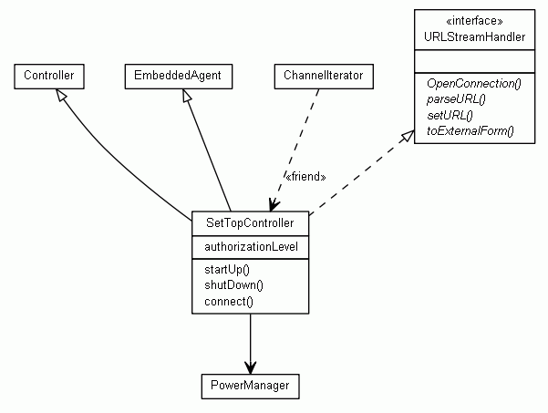
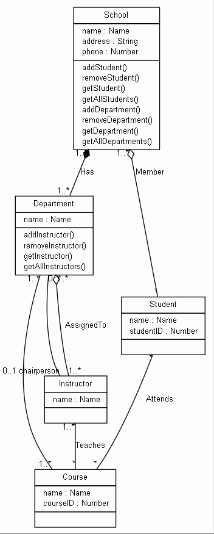
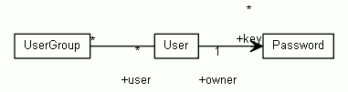
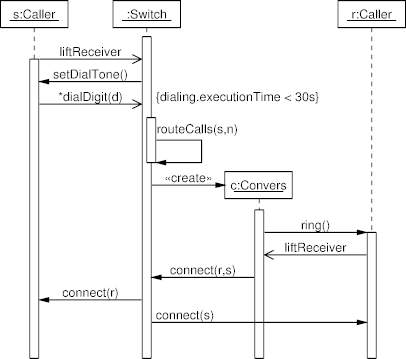
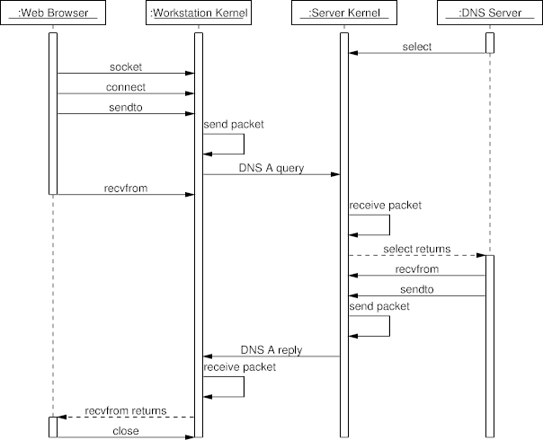

Drawing UML Diagrams with UMLGraph
Diomidis Spinellis
Department of Management Science and Technology
Athens University of Economics and Business
Athens, Greece
dds@aueb.gr
Drawing UML Diagrams with UMLGraph
Introduction
UMLGraph allows the declarative specification and drawing of
UML class and sequence diagrams.
The specification is done in text diagrams, that are then
transformed into the appropriate graphical representations.
There is no rule specifying that models should appear in a graphical
form. A model is a simplification of reality, so a model for a software
artifact could really be an outline of that artifact; think of a class
definition without code in the method bodies. However, we usually
prefer to examine many of our models in a graphical representation: UML
employs ten different diagrams for visualizing different perspectives
of a system.
Designers typically create their model diagrams using a drawing editor.
However, all drawing editors require the tedious placing and manipulation of drawing shapes on the canvas. The effort and the motor coordination skills required for this activity are mostly irrelevant to the end result: unlike architectural or mechanical engineering models the appearance of a software system's model diagram is only marginally related to the quality of the represented software design.
Computer power and automatic graph drawing algorithms have now
sufficiently advanced so as to allow the automatic placement of graph
nodes on the canvas and the near optimal routing of the respective
edges. We can therefore design models using a declarative textual
representation and subsequently view, publish, and share them in
graphical form.
UMLGraph's support for
declaratively specifying class and sequence diagrams
is part of an ongoing effort aiming to support all ten types of UML diagrams.
Creating models in a declarative, textual notation offers a number of advantages.
- First of all, the model composition mechanism matches well both a programmer's high-level skills, the textual abstract formalization of concrete concepts, and the associated low-level skills, the manipulation of text using an editor and other text-based tools.
- The declarative notation, by being closer to the program's representation (the notation I experimented with is based on the Java syntax and semantics), forces the designer to distinguish between the model and the respective implementation, between the essential system characteristics and the trivial adornments.
It is more difficult for designers to get away, as they often do now, with drawing for a model a nice picture of the implementation they have in mind.
- The declarative representation is also highly malleable, the existing visual structure does not hinder drastic changes, nor is effort wasted on the tidy arrangement of graph nodes a psychological barrier against massive design refactoring.
- Declarative models are also highly automatable: they can be easily generated from even higher-level descriptions by trivial scripts and tools operating on design process inputs such as database schemas, existing code, or structured requirements documents.
- With a declarative specification under the programmer's control a macro processors can be used for configuration management, allowing the same model to be used for generating diverse diagrams.
- Revision control and team integration activities can utilize the same proven tools and processes that are currently used for managing source code.
Thus with a tool like Subversion or Git one can keep track of design revisions, create and merge branches, monitor model changes, and split work among a team.
- Finally, the declarative approach can readily utilize existing text processing tools for tasks that a drawing editor system may not provide.
Consider how your favorite model editor handles the following tasks and how you could handle them using a simple Perl script or a text-processing pipeline applied to the declarative model specification:
- identify all classes containing a given field (as a prelude to an aspect-oriented cross-cut);
- count the total number of private fields in a given design;
- order methods appearing in multiple classes by their degree of commonality;
- identify differences between two designs.
All the above tasks can be easily performed in text files using Unix commands
such as
grep,
wc,
grep ... | sort ..., and
diff.
Installation
To install UmlGraph follow these steps.
- Copy the files in
lib to a directory you will
use for storing UmlGraph's installation
(for instance, /usr/local/lib).
- Copy the file
bin/umlgraph (for Unix) or
bin/umlgraph.bat (for Windows) to a directory
of your execution path (for instance, /usr/local/bin).
- Adjust the above file, setting
UMLGRAPH_HOME to
point to the directory where you installed the UmlGraph library files.
UMLGraph is implemented as a javadoc doclet (a program satisfying the
doclet API that specifies the content and format of the output
generated by the javadoc tool).
Furthermore, the output of UmlGraph needs to be post-processed
with the Graphviz dot program.
Therefore, to draw class diagrams with UmlGraph class you will need to have
javadoc
and
Graphviz (http://www.graphviz.org/)
installed on your computer.
Both programs are freely available, from Sun and AT&T respectively,
for many platforms including Unix and Windows.
Javadoc is part of the Sun JDK, so a typical JDK installation will also
include javadoc.
To draw UML sequence diagrams you must also install the free
GNU plotutils (http://www.gnu.org/software/plotutils/plotutils.html)
system.
Class Diagrams
One specifies a class diagram using the Java syntax complemented by
javadoc
tags.
Running the UmlGraph doclet on the specification will generate
a
Graphviz (http://www.graphviz.org/)
diagram specification that can be automatically processed to
create PNG, SVG, EMF, Postscript, GIF, JPEG, fig, or Framemaker drawings.
The following is an example of a specification and the resulting UML class
diagram:
|
class Person {
String Name;
}
class Employee extends Person {}
class Client extends Person {}
|

|
Class Diagram Operations
UMLGraph's input follows the Java syntax and semantics.
However,
since the main purpose of UMLGraph is the declarative specification of
UML diagrams there is no need to flesh-out each class's methods,
to completely specify each class, or to specify package information.
You only specify the details you want to appear on the graph.
If you wish your (Java) implementation to evolve together with the
design feel free to include code or additional details.
You can hide these details from the UML diagram using the javadoc
@hidden tag applied to classes, methods, and fields.
In theory you can also use UMLGraph to reverse engineer existing
Java code.
Note however that UMLGraph was not originally designed for this purpose;
the resulting graphs may be large and unwieldy.
There are various ways to invoke UMLGraph,
each providing a different balance between convenience and flexibility.
Option 1: Using the Supplied Script
This is the simplest option.
If umlgraph (or umlgraph.bat) is correctly
installed,
you can run UMLGraph by simply specifying the basename of
the Java file containing the diagram specification and the file type of
the generated diagram (e.g. gif, ps, png, svg).
Example:
umlgraph Test png
Any additional UMLGraph or javadoc arguments can be added at
the end of the command line.
This command will read the specification file (e.g. Test.java) and
generate directly a diagram of the appropriate type
(e.g. Test.png).
Option 2: Running Java
This option provides the maximum flexibility.
In order to run, javadoc needs to access tools.jar.
You can accomplish this in two ways.
-
Specify the location of
tools.jar as a part of Java's classpath
and specify the full name of the UMLGraph doclet as an argument to Java.
This is an invocation example under Windows
java -classpath "lib/UmlGraph.jar;c:\program files\java\jdk1.6.0_02\lib\Tools.jar"
org.umlgraph.doclet.UmlGraph -package Test.java
and under Unix
java -classpath '/usr/share/lib/UmlGraph.jar:/opt/Java-1.6/lib/tools.jar' \
org.umlgraph.doclet.UmlGraph -package Test.java
- Place the
UmlGraph.jar
file in a directory that also contains the Java SDK tools.jar file.
You can accomplish this either by copying UmlGraph.jar to the SDK
lib directory where tools.jar resides,
or by copying the JDK tools.jar file into the directory
where you installed UMLGraph.
You then run
java -jar /path/to/UmlGraph.jar yourfile1.java ...
You can use any of the javadoc general options;
-private is usually needed to avoid having to explicitly
specify public elements.
Example:
java -jar /usr/jvm/java-1.5.0/lib/UmlGraph.jar -private Simple.java
To generate a diagram of all classes in the package specify as arguments
to the Java invocation the name of the package and the directory where
it resides.
The following example generates a diagram of all UMLGraph classes.
java -classpath ... org.umlgraph.doclet.UmlGraph -sourcepath src/main/java org.umlgraph.doclet
Specifying some packages before the list of source files will designate
those packages as local.
When you specify a package list,
the SVG output UMLgraph generates will contain
local hyperlinks for the local classes
and hyperlinks to the Sun Java API documentation for all other classes.
Option 3: Running Javadoc
Alternatively, you can also run UMLGraph from within javadoc.
This can be useful if your IDE provides additional support for running javadoc.
In this case you run
javadoc with arguments -doclet org.umlgraph.doclet.UmlGraph
-docletpath /path/to/UmlGraph.jar
and append at the end the file(s) that contain your diagram
specification.
Example:
javadoc -docletpath UmlGraph.jar -doclet org.umlgraph.doclet.UmlGraph -private Simple.java
Running Dot
The last two options, will generate the UML diagram in
Graphviz dot format.
This is a text file that can be processed by the Graphviz dot
program to layout and draw the graph.
javadoc will create by default a file named graph.dot
in the current directory.
A command line like the following will convert the graph.dot
file into Postscript:
dot -Tps -ograph.ps graph.dot
or PNG
dot -Tpng -ograph.png graph.dot
Refer to the dot documentation for information on creating other file formats
or adjusting the UMLGraph output.
You also can pipe the result of UMLGraph directly into dot:
java -jar /.../UmlGraph.jar -private -output - Simple.java | dot -Tgif -ograph.gif
Note that when you use dot for generating SVG diagrams your
should specify the -outputencoding UTF-8 option to UMLGraph.
This option will correctly render the stereotype guillemot characters
in the dot output and the corresponding SVG file.
Class Modelling
The UMLGraph class diagrams allows you to model
- classes (specified as Java classes)
-
active classes, components, nodes, use cases,
collaborations, and packages
(specified as Java classes with an
@opt shape tag)
- attributes (specified as Java class fields)
- operations (specified as Java class methods)
- stereotypes (using the
@stereotype name tag)
- tagged values (using the
@tagvalue name value tag)
- implementation relationships (specified using the Java
implements declaration)
- generalization relationships (specified using the Java
extends declaration or (for multiple inheritance) the javadoc @extends tag)
- association relationships (specified using the javadoc
@assoc tag)
- navigable (directed) association relationships (specified using the javadoc
@navassoc tag)
- aggregation relationships (specified using the javadoc
@has tag)
- navigable aggregation relationships (specified using the javadoc
@navhas tag)
- composition relationships (specified using the javadoc
@composed tag)
- navigable composition relationships (specified using the javadoc
@navcomposed tag)
- dependency relationships (specified using the javadoc
@depend tag)
All relationship tags apart from @extends take four arguments:
- The source adornments (role, multiplicity, and visibility)
- The relationship name
- The target adornments (role, multiplicity, and visibility)
- The target class
Arguments can be space-separated, or enclosed in quotes if they
need to contain the space character.
The - character is used as a placeholder to denote empty arguments.
You can use the \n sequence to separate the first three adornments
in separate centered lines;
the \l and \r sequences can also be used to generate left and right
aligned lines.
You can use the < and > characters in the relationship name
to enclose stereotype names.
These will be automatically enclosed in guillemots.
Note that a relationship's target class is not implicitly
defined; it should also be specified using the Java class syntax.
The target can be specified by simple name, java class lookup rules
(imports and visibility) will be used to determine the actual class.
The following is an example of a relationship
specification and the resulting UML diagram:
class Tyre {}
class Engine {}
class Body {}
/**
* @composed 1 - 4 Tyre
* @composed 1 - 1 Engine
* @composed 1 - 1 Body
*/
class Car {}
|
|
Notes in Class Diagrams
In UMLGraph you can easily add a note (comment) to an element,
using the @note tag.
The corresponding text will be split into lines, as specified in the note.
Multiple tags can be used to add more notes to the same element.
More complicated, (one to many) relationships can be established
by creating an element with a note shape, setting its contents
to its comment text through the @opt commentname tag,
and associating it with other elements with the @assoc
tag.
|
/**
* @opt shape node
* @note Located in the
* machine room
* @note Sun Blade 6048
* @depend - - - MapLocation
* @depend - - - DataMine
*/
class Server{}
/** @opt shape component */
class MapLocation {}
/** @opt shape component */
class DataMine {}
/**
* CPU-munching
* components that must
* run on this server
* @opt shape note
* @opt commentname
* @assoc - - - MapLocation
* @assoc - - - DataMine
*/
class munchComment {}
|

|
Class Diagram Options
A number of options contol the operation of UMLGraph
class diagram generator.
These can be specified on the command line, and most can also
be specified through javadoc tags within the diagram, affecting all or some elements.
What Gets Drawn
- -all
- Same as
-attributes
-operations
-visibility
-types
-enumerations
-enumconstants
- -attributes
- Show class attributes (Java fields)
- -commentname
- Name the element using the text in the javadoc comment, instead of the name of its class.
- -constructors
- Show a class's constructors
- -enumconstants
- When showing enumerations, also show the values they can take.
- -enumerations
- Show enumarations as separate stereotyped primitive types.
- -hide
- Specify entities to hide from the graph.
Matching is done using a non-anchored regular match.
For instance, "
-hide (Big|\.)Widget" would hide "com.foo.widgets.Widget" and
"com.foo.widgets.BigWidget". Can also be used without arguments,
in this case it will hide everything (useful in the context of views
to selectively unhide some portions of the graph, see the view chapter for
further details).
- -operations
- Show class operations (Java methods)
- -qualify
- Produce fully-qualified class names.
- -types
- Add type information to attributes and operations
- -view
- Specify the fully qualified name of a class that contains
a view definition. Only the class diagram specified by this view will be generated.
See the views chapter for more details.
- -views
- Generate a class diagram for every view found in the source path.
- -visibility
- Adorn class elements according to their visibility (private, public, protected, package)
Visual Appearance
- -bgcolor
- Specify the graph's background color.
- -collapsible
- Enhance the javadoc HTML files containing UML diagrams with Javascript that provides a link for showing the (initially collapsed) diagrams.
- -edgecolor
- Specify the color for drawing edges.
- -edgefontcolor
- Specify the font color to use for edge labels.
- -edgefontname
- Specify the font name to use for edge labels.
- -edgefontsize
- Specify the font size to use for edge labels.
- -horizontal
- Layout the graph in the horizontal direction.
- -nodefillcolor
- Specify the color to use to fill the shapes.
- -nodefontabstractname
- Specify the font name to use inside abstract class nodes.
- -nodefontclassabstractname
- Specify the font name use for the class name of abstract classes.
- -nodefontclassname
- Specify the font name to use for the class names.
- -nodefontclasssize
- Specify the font size to use for the class names.
- -nodefontcolor
- Specify the font color to use inside nodes.
- -nodefontname
- Specify the font name to use inside nodes.
- -nodefontpackagename
- Specify the font name to use for the package names (used only when the package name is postfixed, see -postfixpackage).
- -nodefontpackagesize
- Specify the font size to use for the package names (used only when it package name is postfixed, see -postfixpackage).
- -nodefontsize
- Specify the font size to use inside nodes.
- -nodefonttagname
- Specify the font name to use for the tag names.
- -nodefonttagsize
- Specify the font size to use for the tag names.
- -nodesep
- Specify the horizontal separation between the class nodes (0.25 by default). Decreasing this can make a diagram more compact.
- -noguillemot
- Specify that guillemot characters should not be used to denote special terms like "interface" and stereotype names. This is used on some platforms to circumvent problems associated with displaying non-ASCII characters.
- -postfixpackage
- When using qualified class names, put the package name in the line after the class name, in order to reduce the width of class nodes.
- -ranksep
- Specify the vertical separation between the class nodes (0.5 by default). Decreasing this can make a diagram more compact.
- -shape
- Specify the shape to use for the rendered element(s).
The following UML shapes are available:
- class (default)
- node
- component
- package
- collaboration
- usecase
- activeclass
All colors can be either a symbolic name (e.g. blue),
a tripple specifying hue-saturation-brightness as values 0-1
(e.g. ".13 0.9 1"),
or a tripple specifying red-green-blue values as hexadecimal
digits prefixed by a # (e.g. "#ff8020").
The symbolic color names are derived from the X Windows System;
you can find a complete list in the
Graphviz documentation (http://www.graphviz.org/doc/info/colors.html)
Font names are passed directly to the dot graph generation back-end.
In general the Postcript standard names Times, Helvetica, Courier, and
Symbol are safe to use.
Relationship Inference
- -collpackages
- Specify the classes that will be treated as
containers for one to many relationships when inference is enabled.
Matching is done using a non-anchored regular match. Empty by default.
- -inferdep
- Try to automatically infer dependencies between classes by inspecting
methods and fields. See the class diagram inference chapter for more details. Disabled by default.
- -inferdepinpackage
- Enable or disable dependency inference among classes in the
same package. This option is disabled by default, because classes in the same package are supposed
to be related anyway, and also because there's no working mechanism to actually detect all
of these dependencies since imports are not required to use classes in the same package.
- -inferdepvis
- Specifies the lowest visibility level of elements used to infer
dependencies among classes. Possible values are private, package, protected, public, in this
order. The default value is private. Use higher levels to limit the number of inferred dependencies.
- -inferrel
- Try to automatically infer relationships between classes by inspecting
field values. See the class diagram inference chapter for further details. Disabled by default.
- -inferreltype
- The type of relationship inferred when -inferrel is activated.
Defaults to "navassoc" (see the class modelling chapter for a list of relationship types).
- -useimports
- Will also use imports to infer dependencies.
Disabled by default, since it does not work properly if there are multiple
classes in the same source file (will add dependencies to every class in
the source file).
API Hyperlinks
- -apidocmap
- Specify the file name of the URL mapping table.
The is a standard Java property file, where the property name is a regular
expression (as defined in the java.util.regex package) and the property value is
an URL "root" as described above.
This table is used to resolved external class names (class names that do not
belong to the current package being processed by UMLGraph). If no file is provided,
external classes will just be mapped to the on-line Java API documentation.
- -apidocroot
- Specify the URL that should be used as the "root" for local classes.
This URL will be used as a prefix, to which the page name for the local class or
package will be appended (following the JavaDoc convention).
For example, if the value
http://www.acme.org/apidocs is
provided, the class org.acme.util.MyClass will be mapped to the URL
http://www.acme.org/apidocs/org/acme/util/MyClass.html.
This URL will then be added to .dot diagram and can be surfaced in the
final class diagram by setting the output to SVG, or by creating an HTML page
that associates the diagram static image (a .gif or .png) with a client-side
image map.
- -link
- A clone of the standard doclet
-link (http://java.sun.com/j2se/1.5.0/docs/tooldocs/windows/javadoc.html#link)
option, allows UMLGraph to generate links from class symbols to their external javadoc
documentation (image maps are automatically generated in UMLGraphDoc, you'll have to generate them
manually with graphviz if using UMLGraph).
Operation
- -compact
- Generate compact dot files, that is, print HTML labels
in a single line instead of "pretty printing" them. Useful if the dot file
has to be manipulated by an automated tool
(e.g., the UMLGraph regression test suite).
- -d
- Specify the output directory (defaults to the current directory).
- -dotexecutable
- Specify the path of the dot executable.
- -linkoffline
- Specify
links to javadoc-generated documentation for external referenced classes.
The
-linkoffline option takes two arguments:
the first for the string to be embedded in the href
links, the second telling it where to find the package-list.
Example:
-linkoffline http://developer.android.com/reference file:/home/doc/android/
See the javadoc documentation for more details.
- -output
- Specify the output file (default
graph.dot).
If the output directory is provided, -output can only specify a file name,
otherwise a full path is accepted as well.
If the filename specified is a dash, then the results are printed on the
standard output, and can be directly piped into dot.
Note that, in order to avoid javadoc messages to contaminate
UMLGraph's output, you must execute UMLGraph directly as a jar,
not through javadoc.
- -outputencoding
- Specify the output encoding character set (default
ISO-8859-1).
When using dot to generate SVG diagrams you should specify
UTF-8 as the output encoding, to have guillemots correctly
appearing in the resulting SVG.
- -verbose2
- Will print on the standard output details regarding
the progress of graph generation.
(Note that -verbose is a javadoc option with a different meaning).
Specifying class Diagram Options
Since the options are really a part of the generated graph you
want in many cases to include them in the diagram specification.
You can do that by adding javadoc @opt tags in front
of a class named UMLOptions, as in the following example:
/**
* @opt horizontal
* @opt all
* @hidden
*/
class UMLOptions {}
Similarly, you can also globally specify options for all the note elements.
through a class named UMLNoteOptions, as in the following example:
/**
* @hidden
* @opt nodefontcolor "blue"
*/
class UMLNoteOptions{}
You can also change the UMLGraph operation on a per-class basis by
using @opt attributes on individual classes.
In this case the @opt specification temporarily overrides
the particular global setting for the class being processed.
Finally, you can reset an option to its default value by prefixing it
with an exclamation mark. For example:
/**
* @opt !attributes
* @opt !nodefontsize
*/
class MyClass {}
will disable attribute listing for MyClass, and reset the node font size
to its default value (10).
Javadocs and UML class diagrams with UMLGraphDoc
UmlGraphDoc is a standard doclet wrapper that combines
the standard doclet output (javadoc documentation) along with auto-generated
class diagrams for both packages and classes.
The UmlGraphDoc process is driven by all the parameters that can be specified for
UMLGraph and the standard doclet; each will be passed to the appropriate
doclet.
Diagram generation is based on the idea of context:
- for packages, the diagram contains all of the classes in the package itself
- for classes, the set of classes somehow related to the current class
The actual content of the diagrams depends on the kind of relations declared on the
class files (with the UMLGraph javadoc annotations) and/or on the kind of automated
inference that UMLGraph is allowed to use.
UMLGraph javadocs are now generated with UmlGraphDoc with the following ant target:
<target name="javadocs" depends="compile">
<javadoc sourcepath="${src}" packagenames="org.umlgraph.doclet.*" destdir="${javadoc}"
private="true">
<doclet name="org.umlgraph.doclet.UmlGraphDoc" path="${lib}/UMLGraph.jar">
<param name="-inferrel"/>
<param name="-inferdep"/>
<param name="-hide" value="java.*"/>
<param name="-collpackages" value="java.util.*"/>
<param name="-qualify"/>
<param name="-postfixpackage"/>
<param name="-nodefontsize" value="9"/>
<param name="-nodefontpackagesize" value="7"/>
<param name="-link" value="http://java.sun.com/j2se/1.5.0/docs/guide/javadoc/doclet/spec"/>
<param name="-link" value="http://java.sun.com/j2se/1.5/docs/api"/>
</doclet>
</javadoc>
</target>
When generating documentation with UmlGraphDoc you will encounter
at some point the "fur ball" effect: some central classes that
have very complex context diagrams.
To reduce this, you can avoid dependency inference
altogheter, or reduce the number of inferred dependencies by using the -inferdepvis options.
If you find that this is not enough and have suggestions on how to improve the situation further,
we are eager to listen.
Class Diagram Views
Documenting a big project often requires multiple diagrams:
each to show a specific and limited portion of the system.
Each diagram is usually composed of few classes, possibily using a different detail level.
The @view tag, marks a special class used to describe a single class diagram.
Similarly to UMLOptions, the view can define its own general options,
but allows to define overrides that allow to adopt different options
for different classes based on regular expressions matching.
The general syntax for defining a view is:
/**
* @view
* @opt [!]viewOption1
* @opt [!]viewOption2
* ...
* @match matchtype regularExpression1
* @opt [!]option1.1 [argument]
* @opt [!]option1.2 [argument]
* ...
* @match matchtype regularExpression2
* @opt [!]option2.1 [argument]
* @opt [!]option2.2 [argument]
* ...
*/
At the moment UMLGraph supports only the 'class' match type, in the future
other types of match will be added (tags, implemented interfaces,
superclasses, just to name a few possibilities).
The view options are applied to every class in the view (so they are the
global options for this class diagram).
The regular expression will be used to match a single class, a group of
classes, or a package, and the options that follow will be applied to
those classes.
Multiple matches will be evaluted in the order of specification.
Refer to the Pattern (http://java.sun.com/j2se/1.5.0/docs/api/java/util/regex/Pattern.html)
class documentation for details on a proper regular expression specification.
Each view will generate a .dot file whose name is the name of the view,
unless the "output" option is specified to override it.
View inheritance
View classes can inherit from other view classes, allowing views to
share a set of common matches. The standard java inheritance mechanism
is used to specify inheritance.
Abstract view classes won't be used to generate diagrams, the common
idiom is to declare a base abstract view to share common options and
overrides, and have concrete view classes that extend for diagram generation.
Class Diagram Example: Shapes
/**
* @hidden
* @opt nodefontcolor "blue"
*/
class UMLNoteOptions{}
/**
* Structural Things
* @opt commentname
* @note Notes can
* be extended to
* span multiple lines
*/
class Structural{}
/**
* spelling.java
* @opt shape component
* @opt commentname
* @note Component
*/
class Component extends Structural{}
/** @opt shape node */
class Node extends Structural{}
/**
* Chain of
* responsibility
* @opt shape collaboration
* @opt commentname
* @note Collaboration
*/
class Collaboration extends Structural{}
/**
* Place order
* @opt shape usecase
* @opt commentname
* @note Use Case
*/
class UseCase extends Structural{}
/**
* Business rules
* @opt shape package
* @opt commentname
* @note Package
*/
class Package{}
/**
* @opt all
* @note Class
*/
class Counter extends Structural {
static public int counter;
public int getCounter();
}
/**
* @opt shape activeclass
* @opt all
* @note Active Class
*/
class RunningCounter extends Counter{}

Class Diagram Example: Generalisation Relationships
|
/*
* Generalisation
* UML User Guide p. 141
*/
/* Basic categorisations */
class Asset {}
class InterestBearingItem {}
class InsurableItem {}
/* Asset types */
/**
* @extends InsurableItem
* @extends InterestBearingItem
*/
class BankAccount extends Asset {}
/** @extends InsurableItem */
class RealEstate extends Asset {}
class Security extends Asset {}
/* Securities */
class Stock extends Security {}
class Bond extends Security {}
/* Bank accounts */
class CheckingAccount extends BankAccount {}
class SavingsAccount extends BankAccount {}
|

|
Class Diagram Example: Advanced Relationships
|
/*
* Advanced relationships
* UML User Guide p. 137
*/
/**
* @opt attributes
* @opt operations
* @hidden
*/
class UMLOptions {}
class Controller {}
class EmbeddedAgent {}
class PowerManager {}
/**
* @extends Controller
* @extends EmbeddedAgent
* @navassoc - - - PowerManager
*/
class SetTopController implements URLStreamHandler {
int authorizationLevel;
void startUp() {}
void shutDown() {}
void connect() {}
}
/** @depend - <friend> - SetTopController */
class ChannelIterator {}
interface URLStreamHandler {
void OpenConnection();
void parseURL();
void setURL();
void toExternalForm();
}
|

|
Class Diagram Example: Relationships Inference
|
import java.util.List;
import java.util.Map;
import java.util.ArrayList;
import java.util.Arrays;
/**
* @opt inferrel
* @opt collpackages java.util.*
* @opt inferdep
* @opt inferdepinpackage
* @opt hide java.*
* @hidden
*/
class UMLOptions {}
class Person {
House[] houses;
List<Dog> dogs;
public Room getFavouriteRoom(House house) {}
}
/**
* @opt inferreltype composed
*/
class House {
Map<String, Room> nameRoomMap;
}
class Room {}
class Dog {
Person owner;
}
|
|
In this diagram we enabled both relationship and dependency inference.
To make sure Person.dogs and Person.friends are interpreted as one to many relationship
the collpackage option has to be specified.
Class Diagram Example: Schema
|
/*
* Schema model
* UML User Guide p. 112
*/
/**
* @opt operations
* @opt attributes
* @opt types
* @hidden
*/
class UMLOptions {}
/* Define some types we use */
/** @hidden */
class Name {}
/** @hidden */
class Number {}
/**
* @has 1..* Member * Student
* @composed 1..* Has 1..* Department
*/
class School {
Name name;
String address;
Number phone;
void addStudent() {}
void removeStudent() {}
void getStudent() {}
void getAllStudents() {}
void addDepartment() {}
void removeDepartment() {}
void getDepartment() {}
void getAllDepartments() {}
}
/**
* @has 1..* AssignedTo 1..* Instructor
* @assoc 1..* - 1..* Course
* @assoc 0..* - "0..1 chairperson" Instructor
*/
class Department {
Name name;
void addInstructor() {}
void removeInstructor() {}
void getInstructor() {}
void getAllInstructors() {}
}
/**
* @assoc * Attends * Course
*/
class Student {
Name name;
Number studentID;
}
class Course {
Name name;
Number courseID;
}
/**
* @assoc 1..* Teaches * Course
*/
class Instructor {
Name name;
}
|

|
Class Diagram Example: ER
The following was generated by annotating the source code of the
SQO-OSS (http://www.sqo-oss.org) project.
Georgios Gousios, who created it, wrote:
I've used UMLgraph to generate an E-R diagram out of the DAOs we use in SQO-OSS. I've just annotated a few classes with @assoc tags, removed the super class DAObject from all entities with sed, did some tweaking by hand in the .dot output, et voila, an E-R depicting almost 30 classes in less than 30 minutes!

Class Diagram Example: Element Visibility
|
/**
* Attribute and operation visility
* UML User Guide p. 123
*
* @opt operations
* @opt attributes
* @opt types
* @opt visibility
* @hidden
*/
class UMLOptions {}
/** @hidden */
class Tool {}
class Toolbar {
protected Tool currentSelection;
protected Integer toolCount;
public void pickItem(Integer i) {}
public void addTool(Tool t) {}
public void removeTool(Integer i) {}
public Tool getTool() {}
protected void checkOrphans() {}
private void compact() {}
}
|
|
Class Diagram Example: Association Types
|
/**
* Associations with visibility
* UML User Guide p. 145
*
* @opt horizontal
* @hidden
*/
class UMLOptions {}
/** @assoc * - "*\n\n+user " User */
class UserGroup {}
/** @navassoc "1\n\n+owner\r" - "*\n\n+key" Password */
class User{}
class Password{}
|

|
Class Diagram Example: Real Example (Catalina Classes)
/*
* Interface and generalization relationships in Jakarta Catalina
*/
class HttpResponseBase
extends ResponseBase
implements HttpResponse, HttpServletResponse {}
abstract class HttpResponseWrapper
extends ResponseWrapper
implements HttpResponse {}
class HttpResponseFacade
extends ResponseFacade
implements HttpServletResponse {}
abstract class ResponseWrapper implements Response {}
abstract interface HttpResponse extends Response {}
abstract class ResponseBase implements Response, ServletResponse {}
abstract interface HttpServletResponse {}
class ResponseFacade implements ServletResponse {}
abstract interface ServletResponse {}
abstract interface Response {}
Class Diagram Example: Class Stereotypes and Tagged Values
|
/*
* Class stereotypes and tagged values
* UML User Guide p. 439
*/
/**
* @opt attributes
* @opt operations
* @opt types
* @hidden
*/
class UMLOptions {}
/** @hidden */
class Action {}
/**
* @stereotype container
* @tagvalue version 3.2
*/
class ActionQueue {
void add(Action a) {};
/** @tagvalue version 1.0 */
void add(Action a, int n) {};
void remove(int n) {};
/** @stereotype query */
int length() {};
/** @stereotype "helper functions" */
void reorder() {};
}
|
|
Class Diagram Example: Fonts, Colors, Global and Local Options
|
/**
* @opt edgecolor "yellow"
* @opt nodefontname "Times"
* @opt bgcolor ".7 .9 1"
* @opt nodefillcolor "#a0a0a0"
* @opt nodefontsize 14
* @hidden
*/
class UMLOptions{}
/**
* @opt nodefontname "Helvetica-Bold"
* @opt nodefontcolor "white"
* @composed - - - Red
* @composed - - - Green
* @composed - - - Blue
* @opt attributes
* @opt visibility
* @opt types
*/
class Pixel {
private int x, y;
public void setColor(ColorValue v) {}
}
/** @opt nodefillcolor red */
class Red {}
/** @opt nodefillcolor green */
class Green {}
/** @opt nodefillcolor blue */
class Blue {}
/** @hidden */
class ColorValue{}
|

|
|
package net.sf.whatever.test;
/**
* @hidden
* @opt postfixpackage
* @opt edgefontname arialbd
* @opt nodefontname arial
* @opt nodefontsize 9
* @opt nodefontabstract ariali
* @opt nodefontclassname arialbd
* @opt nodefontclassabstractname arialbi
* @opt nodefonttagsize 6
* @opt nodefonttagname ariali
* @opt nodefontpackagesize 8
* @opt operations
* @opt attributes
* @opt qualify
* @opt types
*/
class UMLOptions{}
/**
* @stereotype base
* @tagvalue since 1.0
*/
abstract class AbstractBase {
/** @tagvalue since 1.5 */
private int field;
public abstract void abstractMethod();
public int concreteMethod() { return 1; }
}
/**
* @composed 1 has * from.Outer.Space.AlienClass
*/
class Composite extends AbstractBase {}
public class Style extends AbstractBase {}
|

|
Class Diagram Example: Multiple Views Through Command-Line Options
Vadim Nasardinov noted that an advantage of UMLGraph over many
GUI-oriented UML drawing tools is the ability
to generate different views of a diagram
from the same source description.
The following two diagrams were generated from the same source;
a Makefile illustrates a way to organize this process.
Class Overview

Detailed Class View

Java Description
// Author: Vadim Nasardinov
import java.util.List;
import java.util.Map;
/**
* @assoc "1..1" - "0..n" Adapter
* @assoc "" - "0..n" ObjectType
* @assoc "" - "0..n" ObjectMap
* @assoc "" - "0..n" Table
* @assoc "" - "0..n" DataOperation
**/
class Root {
private Map m_adapters;
private List m_types;
private List m_maps;
private List m_tables;
private List m_ops;
public Adapter getAdapter(Class klass) {}
}
class Adapter {
public Root getRoot();
}
abstract class Element {
Root getRoot() {}
}
class ObjectType extends Element {}
/**
* @has "1..1" - "1..1" ObjectType
**/
class ObjectMap extends Element {
private ObjectType m_type;
}
class Table extends Element {}
class DataOperation extends Element {}
Makefile
# Author: Vadim Nasardinov (vadimn@redhat.com)
# Since: 2004-05-26
# See: http://www.spinellis.gr/umlgraph/doc/ceg-mv.html
# Requires: graphviz
# Requires: javadoc
# Requires: JAVA_HOME/lib/tools.jar
.PHONY : clean all dot png
UMLGRAPH := /var/vadim/binaries/UMLGraph-4.8
uml_graph := $(UMLGRAPH)/lib/UmlGraph.jar
java_files := $(shell find diagrams -name *.java)
dot_files := $(subst .java,.dot,$(java_files))
dot_files := $(foreach dot, $(dot_files), build/$(dot))
dot_files += $(subst .dot,-small.dot,$(dot_files))
png_files := $(subst .dot,.png,$(dot_files))
jd:=javadoc
jd_flags := -docletpath $(uml_graph) -doclet org.umlgraph.doclet.UmlGraph -private
jd_flags += -nodefontsize 9 -edgefontsize 9
jd_flags += -nodefillcolor LemonChiffon
detailed_flags := -attributes -operations -types
all: png
clean:
rm -rf build
build/%.dot : %.java
mkdir -p $(dir $@)
$(jd) $(jd_flags) $(detailed_flags) -output $@ $<
build/%-small.dot : %.java
mkdir -p $(dir $@)
$(jd) $(jd_flags) -output $@ $<
%.png : %.dot
dot -Nheight=0.2 -Elabelfontcolor=DarkSlateBlue -Elabelfontsize=8 -Tpng -o $@ $<
build/%.png : %.fig
mkdir -p $(dir $@)
fig2dev -L png -S 4 $< $@
dot: $(dot_files)
png: $(png_files)
build/%.png : %.png
mkdir -p $(dir $@)
cp $< $@
# Example usage:
# make debug-java_files
# make debug-png_files
debug-%:
@echo $* is $($*)
Class Diagram Example: Built-in Support for Views
Views are special classes that allow the generation of a custom class
diagram based on a set of diagram global options and a set of option
overrides for classes matching user specified conditions.
The @view tag, marks a class used to describe a single class diagram.
The general syntax for defining a view is:
/**
* @view
* @opt viewOption1
* @opt viewOption2
* ...
* @match matchtype regularExpression
* @opt option1.1 [argument]
* @opt option1.2 [argument]
* ...
* @match matchtype regularExpression
* @opt option2.1 [argument]
* @opt option2.2 [argument]
* ...
*/
The @match tags allow to specify option overrides for classes that satisfy
the match condition. The match types are:
- class: matches class names using a regular expression.
- subclass: first looks for the base classes using the specified
regular expression, then matches the whole inheritance hierarchy of these
classes. The base classes are included in the match as well.
- interface: first looks for interfaces using the specified
regular expression, then matches every class that implements them,
either directly or indirectly. The interfaces are included in the match
as well.
- context: looks for classes using a regular expression,
then matches every class that's directly connected to them.
The class match type is intended to be used with a regular
expression, the others are usually performed against a class/interface
name rather than a real regular expression, but the syntax allows for
a regular expression to retain some flexibility (for example, a regular
expression can be used to match multiple classes, as in "(A|B|C)").
Refer to the Pattern (http://java.sun.com/j2se/1.5.0/docs/api/java/util/regex/Pattern.html)
API docs for details on regular expression specifications.
Matches will be evaluted in the order of specification, each applying
its overrides to the current options. This means that options for a
specific class are built in the following order, where each item overrides
only the options specified locally, leaving the other options intact:
- Command line options
- UMLOptions options
- View options
- Match overrides, in the order they are specified, and only for
the classes that satisfy the match conditions
Each view will generate a .dot file whose name is the name of the view,
unless the "output" option is specified to override it. Along with the "-views"
parameter on the command line, this allows for multiple views to be generated
in a single doclet invocation.
View inheritance
View classes can inherit from other view classes, allowing views to
share a set of common matches. The standard java inheritance mechanism
is used to specify inheritance.
Abstract view classes won't be used to generate diagrams, the common
idiom is to declare a base abstract view to share common options and
overrides, and have concrete view classes that extend for diagram generation.
When using view inheritance the option building order is:
- Command line options
- UMLOptions options
- Base view options
- View options
- Base view match overrides
- View match overrides
Class Diagram Example: Views With Different Specification Details
The makefile-based multiple view example can be generated by using internal
view support by means of the following sources (note the use of UmlOptions
to set the common appearance options, and the views to generate multiple
diagrams at different detail level).
// Author: Vadim Nasardinov
// Author: Andrea Aime
import java.util.List;
import java.util.Map;
/**
* @assoc "1..1" - "0..n" Adapter
* @assoc "" - "0..n" ObjectType
* @assoc "" - "0..n" ObjectMap
* @assoc "" - "0..n" Table
* @assoc "" - "0..n" DataOperation
**/
class Root {
private Map m_adapters;
private List m_types;
private List m_maps;
private List m_tables;
private List m_ops;
public Adapter getAdapter(Class klass) {}
}
class Adapter {
public Root getRoot();
}
abstract class Element {
Root getRoot() {}
}
class ObjectType extends Element {}
/**
* @has "1..1" - "1..1" ObjectType
**/
class ObjectMap extends Element {
private ObjectType m_type;
}
class Table extends Element {}
class DataOperation extends Element {}
/**
* @hidden
* @opt nodefontname luxisr
* @opt nodefontabstractname luxisri
* @opt edgefontname luxisr
* @opt nodefontsize 8
* @opt edgefontsize 8
* @opt nodefillcolor LemonChiffon
*/
class UMLOptions {}
/**
* @view
* @opt attributes
* @opt operations
*/
class DetailedView {}
/**
* @view
*/
class Overview {}
and by invoking the following commands (assuming UmlGraph.jar is in the
current directory):
javadoc -doclet org.umlgraph.doclet.UmlGraph -private -docletpath UmlGraph.jar -views RootViews.java
dot -Tpng -o root-small.png Overview.dot
dot -Tpng -o root.png DetailedView.dot
The javadoc invocation asks UMLGraph to build a diagram for every view (-views)
contained in the RootViews.java file. Notably, there's no class RootViews
in the source file: this is not needed to make javadoc work on a single
class. Respecting the java rules for file and class naming is anyway advised
in any real situation.
Class Diagram Example: Views for Different Packages
Views are especially interesting in big projects, since they allow to
generate package specific diagrams and overview diagrams in a quick and
consistent way.
As an example we include a few class diagrams that have been generated
from the DBCP connection pool (http://jakarta.apache.org/commons/dbcp),
without altering the sources and using association and dependency inference
instead.
The base view defines commons options, in particular the use of inference,
common class coloring and class visibility (in particular, we hide the
java runtime classes, with the exclusion of a few java.sql classes).
To avoid visual clutter, we have first shown the java.sql package contents, and
then hid selected classes.
The Overview view provides a full view of the DBCP package,
generating quite a big diagram (click on the diagram to show a full size version).
package org.apache.commons;
/**
* @view
* @opt inferrel
* @opt inferdep
* @opt useimports
*
* @match class .*
* @opt nodefillcolor LightGray
*
* @match class org.apache.commons.*
* @opt nodefillcolor PaleGreen
*
* @match class org.apache.commons.dbcp.*
* @opt nodefillcolor LemonChiffon
*
* @match class java.*|org.xml.*
* @opt hide
*
* @match class java.sql.*
* @opt !hide
*
* @match class java.sql\.(Ref|Time|Timestamp|Array|Date|Time|Clob|Blob|SQLException|.*MetaData.*|SQLWarning)
* @opt hide
*/
public abstract class BaseView {
}
/**
* @view
*/
public class Overview extends BaseView {
}
 The
The CommonsDbcp view concentrates on the content of org.apache.commons.dbcp
package, hiding other packages and subpackages available in the sources
(click on the diagram to show a full size version).
package org.apache.commons;
/**
* @view
*
* @match class org.apache.commons.*
* @opt hide
*
* @match class org.apache.commons.dbcp..*
* @opt !hide
*
* @match class org.apache.commons.dbcp..*\..*
* @opt hide
*/
public class CommonsDbcp extends BaseView {}
Finally, the Statement view shows only the Statement related
classes and their dependencies.
package org.apache.commons;
/**
* @view
*
* @match class org.apache.commons.*
* @opt hide
*
* @match class org.apache.commons.dbcp\..*Statement.*
* @opt !hide
*
* @match class org.apache.commons.dbcp..*\..*
* @opt hide
*/
public class Statement extends BaseView {
}

Running the Doclet from Ant
To run the UMLGraph doclet from ant, use a rule,
like the following.
<target name="uml" depends="prepare">
<property name="uml.dir" value="${basedir}/uml"/>
<property name="src.uml.dir" value="${src.dir}/uml"/>
<mkdir dir="${uml.dir}"/>
<path id="uml.source.path">
<pathelement path="${src.uml.dir}/"/>
<pathelement path="${src.java.dir}"/>
</path>
<javadoc sourcepathref="uml.source.path" packagenames="*" package="true">
<doclet name="org.umlgraph.doclet.UmlGraph" path="${basedir}/lib/UmlGraph.jar">
<param name="-d" value="${uml.dir}"/>
</doclet>
</javadoc>
<apply executable="dot" dest="${uml.dir}" parallel="false">
<arg value="-Tpng"/>
<arg value="-o"/>
<targetfile/>
<srcfile/>
<fileset dir="${uml.dir}" includes="*.dot"/>
<mapper type="glob" from="*.dot" to="*.png"/>
</apply>
</target>
Notes
- When you pass the
packagenames option to
javadoc, the default (unnamed) package (and the
UMLOptions class
located in it) is ignored.
In such cases you should include the UMLOptions class
within a named package.
- The above invocation will generated a single class
diagram. If multiple view generation is required you should add
the
views option.
Sequence Diagrams
One specifies a sequence diagram using pic macros to define
objects and method invocations.
The GNU plotutils (http://www.gnu.org/software/plotutils/plotutils.html)
pic2plot program can then process the sequence diagram to create a
PNG, PNM, (pseudo)GIF, SVG, AI, Postscript, CGM, FIG, PCL, HPGL, Regis, or TEK
drawing.
The following is an example of a specification and the resulting UML sequence
diagram:
|
.PS
copy "sequence.pic";
# Define the objects
object(O,"o:Toolkit");
placeholder_object(P);
step();
# Message sequences
active(O);
step();
active(O);
message(O,O,"callbackLoop()");
inactive(O);
create_message(O,P,"p:Peer");
message(O,P,"handleExpose()");
active(P);
return_message(P,O,"");
inactive(P);
destroy_message(O,P);
inactive(O);
# Complete the lifelines
step();
complete(O);
.PE
|
|
The diagram is drawn from its source code specification using a command
like:
pic2plot -Tgif FILENAME.pic >FILENAME.gif
Syntax of Sequence Diagram Definitions
Sequence diagrams consist of objects, their lifelines
(also known as smimming lanes),
and the exchanged messages.
Sequence diagrams are defined in UMLGraph using the pic
syntax.
A sequence diagram file must start with the sequence:
.PS
copy "sequence.pic";
The .PS marks the beginning of pic commands.
The sequence
copy "sequence.pic";
loads the macros defining the sequence diagram operations.
The file sequence.pic, part of the UMLGraph distribution,
must exist in the directory where pic2plot will be executed.
Sequence diagram files must end with the sequence:
.PE
The sequence diagrams are defined by calling function-like pic
macros.
Each function call is terminated with a semicolon.
Space is not significant between macro calls; on the other hand
adding a space character between a macro's arguments can lead
to surprises and should be avoided.
Objects are referenced using variable-like alphanumeric identifiers.
Strings are enclosed in double quotes.
As an example, the following defines an object O
that will be identified in the diagram as
o:Toolkit
object(O,"o:Toolkit");
Comments start with a # character.
# This is a comment
Defining a Simple Sequence Diagram
A sequence diagram is defined in three main phases:
- Object definition
- Message exchange
- Object lifeline completion
The following is an example of a very simple UMLGraph
sequence diagram
(from now on we will ommit the .PS/.PE and
copy "sequence.pic";
elements.)
.PS
copy "sequence.pic";
# Object definition
object(S,"s:Switch");
object(P,"p:Pump");
# Message exchange
message(S,P,"run()");
message(S,P,"stop()");
# Object lifeline completion
complete(S);
complete(P);
.PE
The above code, defines two objects, S and P,
labeled as "s:Switch" and "p:Pump".
Objects are placed in the diagram from left to right, in the
order they are defined.
All defined objects are initially inactive.
The code then sends a messages from S to P labeled "run()",
and another one labeled "stop()".
Each message automatically advances the sequence diagram timeline by a
single step.
Finally, the code completes the lifelines of the two objects.
The resultant diagram is
An Improved Sequence Diagram
Let us try to improve the simple sequence diagram.
# Object definition
object(S,"s:Switch");
object(P,"p:Pump");
step();
active(S);
active(P);
# Message exchange
message(S,P,"run()");
message(S,P,"stop()");
# Object lifeline completion
step();
complete(S);
complete(P);
Here, we have manually advanced the timeline of our diagrams
with a step(); call after we defined the objects,
to provide them with a bit of breathing space.
We also added a similar step call at the end of the diagram.
Finally, we made both objects active, after their definition.
Calling active on a given object will change the drawing of its
lifeline, from the dashed format indicating an inactive object,
to a thick swimming-lane, active object, format.
The resultant diagram is

Creating and Destroying Objects
Objects do not always appear at the top of a UML sequence diagram;
they are often constructed by other objects.
In this case, a placeholder object is defined at the beginning
of the diagram, to leave the appropriate space of the object.
Later a create message will actually create an object with the
given label.
Any object can also receive a destroy message, that will stop
its life.
The lifeline of destroyed messages is not typically completed.
The following definition extends our previous diagram with a
dynamically created flow object.
# Define the objects
object(S,"s:Switch");
object(P,"p:Pump");
placeholder_object(F);
step();
active(S);
active(P);
# Message sequences
message(S,P,"run()");
create_message(P,F,"f:Flow");
active(F);
message(S,P,"stop()");
destroy_message(P,F);
# Object completion
step();
complete(S);
complete(P);
The resultant diagram is

Sequence Diagram Operations
The following calls can be used to define a sequence diagram.
- object(name,label);
- Defines an object with the given name, labeled on the diagram
as specified.
- placeholder_object(name)
- Defines a place where the named object will later be
created.
Can also be written as
pobject.
- actor(name,label);
- Defines an actor with the given name, labeled on the diagram
as specified.
Actors are typically used instead of objects to indicate operations
initiated by human actions.
- complete(name);
- Completes the lifeline of a given object (or actor)
by drawing its lifeline to the bottom of the diagram.
- message(from_object,to_object,label)
- Draws a message between two objects, with the given label.
Self messages (where an objects sends a message to itself)
are supported.
- return_message(from_object,to_object,label)
- Draws a return message between two objects, with the given label.
Can also be written as
rmessage.
- create_message(from_object,to_object,object_label);
- Has from_object create the to_object, labeled
with object_label.
The message is labeled with the
create stereotype.
Can also be written as cmessage.
- destroy_message(from_object,to_object);
- Sends a message
labeled with the
destroy stereotype
from the from_object to the to_object.
The object to_object is marked as destroyed, with an X at the
end of its lifeline.
The object's lifeline need not be otherwise completed.
Can also be written as dmessage.
- active(object);
- Changes the object's status to active, and
changes its lifeline drawing style correspondingly.
An active call in an already active object will result
in a swimlane showing a nested object activation.
- inactive(object);
- Changes the object's status to inactive, and
changes its lifeline drawing style correspondingly.
An inactive call on a nested object invocation will
result in showing a simple active swimlane.
- delete(object);
- The object deletes itself, drawing an X at the end
of its lifeline.
The object's lifeline need not be otherwise completed.
- lifeline_constraint(object,label);
- Displays a constraint label (typically given inside curly braces)
for the given object.
The constraint will appear on the right of the object's lifeline
at the time it appears.
Can also be used to place an message label on the left of a
message arrow, rather than its center.
Can also be written as
lconstraint.
- lconstraint_below(object,label);
- same as
lconstraint,
but it will be shown below the current line instead of above.
- object_constraint(label)
- Displays an object constraint (typically given inside curly braces)
for the last object defined.
Can also be written as
oconstraint.
- step();
- Steps the time by a single increment, extending all
lifelines.
- async();
- All subsequent messages are asynchronous and will
be drawn correspondingly.
- sync();
- All subsequent messages are synchronous and will
be drawn correspondingly.
- begin_frame(left_object,name,label_text);
- Begins a frame with the upper left corner at
left_object column and the current line.
The specified label_text is shown in the upper left corner.
- end_frame(right_object,name);
- Ends a frame with the lower right corner at
right_object column and the current line.
The name must correspond to a begin_frame's name.
- comment(object,[name],[line_movement],[box_size] text);
- Displays a comment about the object.
The name can be used with
connect_to_comment(object2,name); to get additional
connecting lines to the comment.
line_movement changes the position of the comment and
box_size its size. Note that there's no comma between
box_size and text.
text is the (multiline) comment-text that will be displayed.
name, line_movement and box_size are optional
(but the commas must still appear).
- connect_to_comment(object2,name);
- See
comment.
Sequence Diagram Variables
The value of
pic variables can sometimes be modified by assignment
to achieve a better-looking result.
The following two lines change the width of the object boxes to
1.1" and the spacing between objects
to 0.5".
boxwid = 1.1;
movewid = 0.5;
The following variables can be redefined to change the layout of
a drawing.
| Variable Name | Default Value | Operation |
|---|
| boxht | 0.3 | Object box height |
| boxwid | 0.75 | Object box width |
| awid | 0.1 | Active lifeline width |
| spacing | 0.25 | Spacing between messages |
| movewid | 0.75 | Spacing between objects |
| dashwid | 0.05 | Interval for dashed lines |
| maxpswid | 11 | Maximum width of picture |
| maxpsht | 11 | Maximum height of picture |
| underline | 1 | Underline the name of objects |
Sequence Diagram Example: Nested Activation and Complex Interactions
The following diagram, based on the one appearing on p. 436 of the
UML User Guide, contains the most important elements
of an interaction.
It also uses nested
active inactive calls to show a nested object activation.
Diagram

Diagram Source Code
# UML User Guide: Appendix A,p. 436
.PS
copy "sequence.pic";
# Define the objects
pobject(E,"External Messages");
object(T,"t:thread");
object(O,":Toolkit");
pobject(P);
step();
# Message sequences
message(E,T,"a1: run(3)");
active(T);
message(T,O,"run()");
active(O);
message(O,O,"callbackLoop()");
cmessage(O,P,"p:Peer"," ");
active(O);
message(O,P,"handleExpose()");
active(P);
rmessage(P,O,"");
inactive(P);
inactive(O);
dmessage(O,P);
inactive(T);
inactive(O);
step();
complete(T);
complete(O);
.PE
Sequence Diagram Example: Concurrent Processes and Activations
The following diagram, based on the diagram appearing on p. 70 of
UML Distilled, contains self calls, object activation,
self-deleted objects, and asynchronous messages.
Diagram

Diagram Source Code
# UML Distilled: Figure 5-2 p. 70
.PS
copy "sequence.pic";
boxwid = 1.3;
# Define the objects
pobject(X);
pobject(T);
pobject(C);
pobject(A1);
pobject(A2);
# Message sequences
cmessage(X,T,"a: Transaction");
active(T);
async();
cmessage(T,C,"a: TransCoord");
inactive(T);
active(C);
cmessage(C,A1,"a1: TransCheck");
active(A1);
cmessage(C,A2,"a2: TransCheck");
active(A2);
message(A1,C,"ok");
sync();
step();
active(C);
message(C,C,"all done?");
inactive(C);
async();
step();
delete(A1);
inactive(C);
step();
message(A2,C,"ok");
active(C);
sync();
step();
active(C);
message(C,C,"all done?");
inactive(C);
async();
step();
delete(A2);
message(C,T,"beValid");
inactive(C);
active(T);
step();
complete(T);
complete(C);
.PE
Sequence Diagram Example: Create and Destroy
The following diagram, based on the one appearing on p. 247 of the
UML User Guide, illustrates the dynamic creation and destruction of
objects, an object constraint, and the changing of the focus of control.
Diagram

Diagram Source Code
# UML User Guide: Figure 18-2
.PS
copy "sequence.pic";
boxwid = 1.1;
movewid = 0.5;
# Define the objects
object(C,"c:Client");
pobject(T);
object(P,"p:ODBCProxy");
# Message sequences
step();
active(C);
cmessage(C,T,":Transaction");
oconstraint("{Transient}");
step();
message(C,T,"setActions(a,d,o)");
active(T);
message(T,P,"setValues(d,3.4)");
active(P);
step();
inactive(P);
message(T,P,"setValues(a,\"CO\")");
active(P);
rmessage(T,C,"committed");
inactive(T);
inactive(P);
async(); dmessage(C,T);
step();
inactive(C);
step();
complete(C);
complete(P);
.PE
Sequence Diagram Example: Lifeline Constraints
The following diagram, based on Figure 18-4 appearing on p. 252 of the
UML User Guide, illustrates constraints on an object's lifeline,
used both as genuine constraints, and to place a message label
on a particular position.
In addition, this diagram also uses nested activation.
Diagram

Diagram Source Code
# UML User Guide: Figure 18-4
.PS
copy "sequence.pic";
movewid = 0.5;
# Define the objects
object(S,"s:Caller");
object(W,":Switch");
pobject(C);
object(R,"r:Caller");
# Message sequences
step();
active(W);
async(); message(S,W,"liftReceiver"); sync();
active(S);
message(W,S,"setDialTone()");
async(); message(S,W,"*dialDigit(d)"); sync();
lconstraint(W,"{dialing.executionTime < 30s}");
active(W);
message(W,W,"routeCalls(s,n)");
inactive(W);
cmessage(W,C,"c:Convers");
active(C);
message(C,R,"ring()");
active(R);
async(); message(R,C,"liftReceiver"); sync();
message(C,W,"connect(r,s)");
message(W,S,"connect(r)");
# Specify label as a "constraint" to allign on W
message(W,R,""); lconstraint(W,"connect(s)");
step();
complete(S);
complete(W);
complete(C);
complete(R);
.PE
Sequence Diagram Example: External Actor
The following diagram, based on Figure 7-1 appearing on p. 102 of the
UML User Guide, illustrates an interaction diagram with an
external actor.
Diagram
Diagram Source Code
# UML User Guide Figure 7-1.
.PS
copy "sequence.pic";
actor(A,"");
object(T,":OTaker");
object(F,":OFulfill");
step();
message(A,T,"submitOrder");
message(T,F,"placeOrder");
message(F,A,"acknowledgeOrder");
step();
complete(A);
complete(T);
complete(F);
.PE
Sequence Diagram Example: A DNS Query
The following diagram, illustrates the operating system calls of
a typical DNS query.
It will appear in the book
Code Quality: The Open Source Perspective (http://www.spinellis.gr/codequality) (Addison-Wesley 2006).
The diagram was the original motivation behind the UMLGraph sequence diagram
drawing facility.
Diagram

Diagram Source Code
#/usr/bin/pic2plot -Tps
#
# Run as pic filename | groff | ps2eps
#
# DNS query collaboration diagram
#
#
.PS
copy "sequence.pic";
boxwid = 1.3;
# Define the objects
object(B,":Web Browser");
object(W,":Workstation Kernel");
object(S,":Server Kernel");
object(D,":DNS Server");
step();
# Message sequences
active(B);
active(D);
active(W);
active(S);
message(D,S,"select");
inactive(D);
message(B,W,"socket");
message(B,W,"connect");
message(B,W,"sendto");
message(W,W,"send packet");
message(W,S,"DNS A query");
message(B,W,"recvfrom");
inactive(B);
message(S,S,"receive packet");
rmessage(S,D,"select returns");
active(D);
message(D,S,"recvfrom");
message(D,S,"sendto");
message(S,S,"send packet");
message(S,W,"DNS A reply");
message(W,W,"receive packet");
rmessage(W,B,"recvfrom returns");
active(B);
message(B,W,"close");
complete(B);
complete(W);
complete(S);
complete(D);
.PE
Sequence Diagram Example: A Comments and Frames
The following sequence diagram demonstrates the use of the frame and comment elements.
Diagram

Diagram Source Code
# usage-example for the comment extensions to the
# Written by Sebastian Setzer
.PS
copy "sequence.pic";
# Define the objects
actor(U, "");
object(G,"g:GUI");
placeholder_object(Dummy1); # more space
placeholder_object(D);
step();
# Message sequences
active(G);
step();
create_message(G,D,"db:DB");
active(D);
step();
inactive(D);
async(); # use asynchrone messages (not-filled arrowheads)
comment(D,C,down 1 right, wid 1 ht 0.7 "waiting for" "condition" "dbMailbox")
message(U,G,"openBrowser");
message(G,D,"query()"); active(D);
message(D,G,"result"); inactive(D);
connect_to_comment(D,C)
message(U,G,"scroll");
message(G,D,"query()"); active(D);
message(D,G,"result"); inactive(D);
connect_to_comment(D,C)
message(U,G,"Exit");
step();
begin_frame(G,F,"OnExit");
message(G,D,"shutdown()"); inactive(G); active(D);
comment(G,C,down .2 right .2, wid 2 ht 0.25 "wait for cond. dbShutdown")
step();
comment(D,C,right, wid 2 ht 1 \
"all queries preceeding the" \
"shutdown in the mailbox" \
"are answered already." \
"DbQuery-Objects can" \
"be destroyed")
message(D,G,"done"); inactive(D); active(G);
sync();
destroy_message(G,D,"");
step();
end_frame(D,F);
step();
inactive(G);
# Complete the lifelines
step();
complete(G);
complete(U);
.PE
Frequently Asked Questions
Contents
Assuming that you diagram's description is in the file Diag.java,
issue the command:
umlgraph Diag png
java -jar path-to/UmlGraph.jar -package -output - Diag.java | dot -Tpng -oDiag.png Diag.dot
In the above you can change png to another file format,
and add more UMLGraph switches at the end of the line.
UMLGraph uses guillemot characters for representing the angle brackets around
stereotypes, as in «interface».
By default these are encoded as ISO-8859-1 characters, which are illegal
in the UTF-8 output that dot generates for SVG.
When using dot to generate SVG output, you should also specify
-outputencoding utf8 to UMLGraph.
Both
dot and
pic2plot can directly produce bitmap images in
formats like GIF, PNG and PNM.
However, if you want to produce presentation-quality output
the a vector output format like Postscript or SVG is preferable.
If you do require a bitmap format, it might be worth to create
it at a higher resolution from a Postscript image, and then downsample it.
This procedure (used for the diagrams appearing on the UMLGraph web site)
will create an antialiased image of a higher quality than what the default
bitmap output options produce.
The following pipeline is an example of how you can achieve this
effect:
dot -Tps FILENAME.dot |
gs -q -r360 -dNOPAUSE -sDEVICE=pnm -sOutputFile=- - -c quit |
pnmcrop |
pnmscale 0.25 |
ppmtogif >FILENAME.gif
(David Griffiths reports that he had to add to the gs command
-sPAPERSIZE=a4 or
-dDEVICEHEIGHTPOINTS=1000 to avoid getting
his results chopped-off.)
One other possibility for converting the sequence diagram into Postscript
is to pass it through pic and groff.
Tools like ps2epsi and ps2eps can then be used to
convert the Postscript into encapsulated Postscript.
Of course, groff users will just use the pic
program as part of their processing pipeline.
Try manipulating the dot parameters ratio, minlen, ranksep, and
nodesep.
For example, Arnaud Rogues recommends running dot with
command-line arguments as follows.
dot -Gratio=0.7 -Eminlen=2
Most probably your class diagram uses packages, and you are not
qualifying the classes with the respective package names in the
tags you use.
The tags are not smart enough to do the package resolution,
so you will have to prepend the package name to the class,
or avoid using packages.
Problematic Specification
package test;
abstract class AbstractNode {}
/** @composed 1 has * AbstractNode */
class InnerNode extends AbstractNode {}
class Leaf extends AbstractNode {}
First Approach: Class Name Qualified with the Package
package test;
abstract class AbstractNode {}
/** @composed 1 has * test.AbstractNode */
class InnerNode extends AbstractNode {}
class Leaf extends AbstractNode {}
Second Approach: No Package Specification
abstract class AbstractNode {}
/** @composed 1 has * test.AbstractNode */
class InnerNode extends AbstractNode {}
class Leaf extends AbstractNode {}
Yes they should.
Unfortunately, dot does not (yet) support a way to underline
single labels, and thus UMLGraph can not show the static fields
underlined.
A port of pic2plot for Windows can be found in
GNU PlotUtils, which is part of the
GnuWin32 (http://gnuwin32.sourceforge.net/packages.html)
project.
On Windows platforms note that the current version of
pic2plot appears to be very picky about carriage return (CR - \r)
characters (by default, CR is part of the platform's end of line sequence)
appearing in its input file.
Therefore, you will probably want to instruct your editor to create
Unix-style files, or filter the files to remove the carriage return
characters.
The following Perl invocation is such a filter:
perl -p -e "BEGIN {binmode(STDOUT);} s/\r//"
In addition, pic2plot appears to require that the last input file
be properly terminated (with a newline).
Apparently, some Windows editors may leave the last line unterminated,
so if your editor is in this category it may be safer to add a blank line
in the end.
Sorry, I did not develop this plugin, and therefore can not offer help.
Have a look at the project's documentation and mailing lists available through
plugin web page (http://maven-plugins.sourceforge.net/maven-dotuml-plugin/).
You can't.
You have to write the pic code for the sequence diagrams by hand.
When you pass the packagenames option to
javadoc, the default (unnamed) package (and the
UMLOptions class
located in it) is ignored.
In such cases you should include the UMLOptions class
within a named package.
Make sure you are running Java 1.5 (run java -version to see).
If you are not running 1.5 you may need to adjust the symbolic links
in
/System/Library/Frameworks/JavaVM.framework/Versions.
This blog entry (http://www.spinellis.gr/blog/20060921/) describes
a simple solution that has worked for me.
Depending on your requirements YMMV.
This happens due to a know javadoc bug (http://bugs.sun.com/bugdatabase/view_bug.do?bug_id=6442982).
By fixing the classpath used for the UNLGraph invocation you can avoid this
problem.
Olivier Duysens notes:
JBuilder users need to go to Preferences/Build/Ant,
and tick the box "Use project libraries when running ant" to solve the issue.
UMLGraph is distributed under the
BSD license (http://www.opensource.org/licenses/bsd-license.html)
(see the file LICENSE in the distribution).
For uniformity with the rest of the web content appearing on this site,
the web site of UMLGraph appears under a
Creative Commons Attribution-NonCommercial-NoDerivs 2.5 (http://creativecommons.org/licenses/by-nc-nd/2.5/)
license.
This affects only the UMLGraph home page; all other material
(for example the documentation) is also part of the UMLGraph distribution,
and can therefore be used under the BSD license.
This exception will occur when you execute UMLGraph directly as a jar
(not throughjavadoc), and the files UmlGraph.jar and tools.jar
are not in the same directory.
Either copy UmlGraph.jar in the directory where the tools.jar
of the JDK distribution is located (and execute UmlGraph.jar from there),
or copy tools.jar to the directory where UmlGraph.jar is located.
(The file tools.jar is typically located in the lib directory
of your JDK distribution.)
This appears to be a limitation of pic2plot.
You can work around it, by increasing the width and height values appearing
in the SVG XML file that pic2plot generates.
You need to pass the -private flag to javadoc.
Note that
when processing code that includes annotations
defined by libraries outside the core J2SE distribution,
it is a good idea to include the library jars to the classpath.
Otherwise, javadoc (and concequently UMLGraph)
will fail to process the input classes correctly.
This is a known issue (http://forums.oracle.com/forums/thread.jspa?threadID=1521148) with javadoc,
but only manifests in certain occasions when running UMLGraph,
for example when processing private class fields.
Bibliography
- Grady Booch, James
Rumbaugh, and Ivar Jacobson.
The Unified
Modeling Language User Guide.
Addison-Wesley, Reading, MA, 1999.
- Martin Fowler and
Kendall Scott.
UML
Distilled: Applying the Standard Object Modeling Language.
Addison-Wesley, Boston, MA, second edition, 2000.
- EmdenR. Gasner,
Eleftherios Koutsofios, StephenC. North, and Kiem-Phong Vo.
A technique for drawing directed graphs.
IEEE Transactions on Software Engineering, 19(3):124230, May
1993.
- BrianW. Kernighan.
PICa graphics language for typesetting: Revised user manual.
Computer Science Technical Report 116, Bell Laboratories, Murray Hill, NJ,
December 1984.
Available online at http://cm.bell-labs.com/cm/cs/cstr (http://cm.bell-labs.com/cm/cs/cstr).
- Object
Management Group.
Human-usable textual
notation (HUTN) specification.
Technical Report ptc/02-12-01, OMG Inc., Needham, MA, December 2002.
Available online http://www.omg.org/docs/ptc/02-12-01.pdf (http://www.omg.org/docs/ptc/02-12-01.pdf).
- James Rumbaugh, Ivar
Jacobson, and Grady Booch.
The Unified
Modeling Language Reference Manual.
Addison-Wesley, Reading, MA, 1999.
- Frank Schoep.
UML
diagrams using Graphviz Dot, April 2006.
Available online
http://www.ffnn.nl/pages/articles/media/uml-diagrams-using-graphviz-dot.php (http://www.ffnn.nl/pages/articles/media/uml-diagrams-using-graphviz-dot.php).
- S.Seifermann and
H.Groenda.
Survey
on textual notations for the unified modeling language.
pages 2839, 2016.
cited By 0.
- Diomidis Spinellis.
Code Reading: The Open
Source Perspective.
Addison-Wesley, Boston, MA, 2003.
- Diomidis Spinellis.
On
the declarative specification of models.
IEEE Software, 20(2):9496, March/April 2003.
- Diomidis Spinellis.
Code Quality: The Open
Source Perspective.
Addison-Wesley, Boston, MA, 2006.
- Meera Subbarao.
Reverse-engineer
source code into uml diagrams, August 2008.
Available online
http://java.dzone.com/articles/reverse-engineer-source-code-u (http://java.dzone.com/articles/reverse-engineer-source-code-u).
Projects Based on UMLGraph
Here are other programs or efforts that build on UMLGraph's
code or ideas.
Version History
- Version 5.7 Under development
-
- Version 5.6 2012-05-31
-
- Maven artifact deployment
- Version 5.5 2012-05-13
-
- Added ability to make aggregate relationships (
@has and
@composed) navigable through the new @navhas
and @navcomposed relationships.
(Contributed by Alan Jeffrey.)
- Make UMLGraphDoc generation compatible with JDK 7
(Contributed by Stefano Martina.)
- Moved project's source code repository hosting to
GitHub (https://github.com/dspinellis/UMLGraph).
- Various documentation improvements.
- Version 5.4 2011-01-08
-
- Make the generation of diamond shapes compatible with GraphViz 2.27.
(Contributed by Soraya Santana de la Fe.)
- Make the diagram elements appearing in HTML content clickable.
(Contributed by Bernd Onasch.)
- Fix to ensure that class images only appear once.
(Contributed by Zhigang Xie.)
- Version 5.3 2010-05-24
-
- Sequence diagrams provide an option to specify whether objects are
underlined or not.
- Documentation generated with UMLGraph will process correctly
non-ASCII characters.
(Fix contributed by Gunho Kim.)
- New
-dotexecutable option allows the explicit specification of
dot's location.
(Contributed by Laird Nelson.)
- UmlGraphDoc will obey the options specified through
@opt tags within Java files.
(Contributed by Laird Nelson.)
- Use a logical font rather than a font file name for italics.
This fixes a problem with unresolved fonts under Windows and
modern versions of Graphviz.
(Suggested by Przemyslaw Szufel.)
- Support for javadoc's
-linkoffline option.
(Contributed by Nikita Kozlov.)
- Do not show relations of hidden fields.
(Fix contributed by Cimballi.)
- Version 5.2 2008-12-03
-
- Corrected case of the tools.jar filename in the umlgraph shell script.
(Reported by Øyvind Jergan).
- Fixed exception when an unknown class dependency is specified.
(Reported by Jan Schlüter).
- Corrected NullPointerException occurring when no global options were
available.
(Fix supplied by Bernd Blacha.)
- Version 5.1 2008-08-27
-
- Active classes now appear with a double vertical border, following UML2.
- Reorganized the documentation of class diagram options.
- New class diagram options
-nodesep and -ranksep,
which allow fine control of the generated diagram layout.
(Patch submitted by Trustin Lee.)
- A class's title will appear as a tooltip in image files that support this
feature.
(Patch submitted by Anthony Callegaro.)
-
Nested class hyperlinks to Javadoc documentation now work correctly.
(Patch submitted by David P. Caldwell.)
-
The guillemot characters are now output with their Unicode HTML numeric
escapes instead of their HTML symbolic values.
This makes the output work correctly on Mac OS X, and is also easier
to validate with XML tools.
(Patch submitted by Joshua Lim.)
-
UmlGraphDoc now supports Javascript-collapsible UML diagrams.
A new option
-collapsible can be used to enable this
feature.
(Patch submitted by Franz Wilhelmstoetter.)
- Version 5.0 2007-11-29
-
- All code now lives under
org.umlgraph.
This change requires corresponding modifications to the UMLGraph
callers.
- Add support for six new shapes: node, component, package, collaboration,
usecase, and activeclass.
These shapes require GraphViz 2.16 or newer.
- A new
@note tag allows the annotation of elements with comments.
(Suggested by Sébastien Pierre.)
- A new
@commentname option allows the naming of elements
with the text of the javadoc comment.
- Version 4.9 2007-09-28
-
- Note that from this version UMLGraph requires JDK 6.
- Added installation instructions.
- Improved documentation for invoking UmlGraph.
- Command-line scripts for invoking UmlGraph from Windows and Unix.
- Test data is now compatible with the output of the JDK 6 javadoc
- Java 6.0 deprecated methods are marked in the code as such.
- The -noguillemot option now outputs escaped characters compatible
with version 1.13 of Graphviz.
(reported by Roger Alexander).
- Fix inferred relations of maps to primitive Java types.
(reported by Przemyslaw Wesolek).
- Version 4.8 2007-05-10
-
- This is the last version compatible with Java 1.5.
- UmlGraph can now be invoked directly as a jar file.
- Support for sending results to the standard output for piping into dot.
- The distribution includes an example shell script and batch file for
invoking UmlGraph.
- Version 4.7 2007-03-26
-
- Correct the build file for generating the UmlGraph
javadocs under Unix (Dirk Datzert)
- Correct output of UmlGraphDoc path-relative file names under Windows
(fix by: Panagiotis Astithas)
- Fix InvocationTargetException when a relative output file name is
given (reported by: Georgios Gousios)
- Version 4.6 2007-02-05
-
- Version 4.5 2006-12-14
-
- Correct running of the UmlGraphDoc tests
- Correct the JavaDoc generation (Maxim Butov)
- Correct appearance of generic names (Ivan F. Villanueva B.)
- UmlGraphDoc now handles filenames with embedded spaces (reported and tested
by Jörn Guy Süß and Christophe DENEUX)
- Version 4.4 2006-07-19
-
- Major new functionality: UmlGraphDoc, a new doclet that can generate context and package
class diagrams integrated with the standard javadoc output. Uses the same switches
as UmlGraph. (Andrea Aime)
- Removed -verbose2 option, use the standard -quiet option instead to avoid UmlGraphDoc and
UmlGraph printing notices. (Andrea Aime)
- Added a -inferdepvis option that allows to control which member of a class will be used
for dependency inference. Acceptable values are private, package, protected and public.
Makes sense when inferring dependencies without using -useimports.
- Added a -inferdepinpackage option that enables dependency inference among classes in the
same package. This is disabled by default, since there is no reliable way to infer
dependencies, and classes in the same package are supposed to be related anyway.
- Support the -link flag in the same way as the standard doclet, in order to populate
the api doc map, used to generate image maps with links to associated external classes.
- Filter-out the static initializer method from classes (Andreas Studer)
- Version 4.3 2006-03-05
-
- Now using HTML labels in dot files. This allows for a different font
in each row of the class nodes. Added options
to control fonts for class names, packages and tags. (Andrea Aime)
- Version 4.2 (internal release)
-
- Correct the handling of qualified class names following
the extends keyword (Arnaud Rogues).
- Relationship inference support. When enabled UMLGraph will try to
compute relationships and dependecies by field/method/import
statements examination. (Andrea Aime)
- Standard class lookup for association targets. The target can be
specified by name without the need to include the full package
information, imports and standard visibility rules will be applied
to determine the actual class (Andrea Aime)
- A views feature provides the ability to specify
option overrides for classes satisfying specific conditions
and to generate multiple diagrams in a single doclet invocation.
See the new tags @view, @match and the command line
parameters -d, -view, -views (Andrea Aime)
- Options can be reset to their default value using the "@opt !option"
syntax (useful for local overrides and in views) (Andrea Aime)
- Javadoc documentation (Andrea Aime).
- Centralized option handling in the Option class (even for command line
arguments) (Andrea Aime).
- Version 4.1 2005-11-15
-
- Version 3.3 2005-10-19
-
- The sequence diagrams now include support for drawing
comments and frames. (Contributed by Sebastian Setzer)
- The -noguillemot option will output two angle bracket pairs
instead of round brackets around stereotypes.
- Version 3.2 2005-07-19
-
- Display the template arguments of generic classes inside angle brackets.
Note that according to the UML specification these arguments should
be displayed in a dashed box on the top right of the class.
However, such a display is currently not possible in GraphViz.
- Display the type parameters of fields and method arguments.
- Version 3.1 2005-03-26
-
- Note that from this version UMLGraph requires Java 1.5.
- First step of the Java 1.5 transition; more will follow.
- The container code in the source was changed to use the Java 1.5 generics.
- Will display enumerations as a stereotyped primitive type.
Two new options
-enumerations and -enumconstants
control the corresponding operation.
- Version 2.10 2004-11-19
-
- This is the last version compatible with Java 1.4.
- Corrected the interaction between the
-attributes and
-operations options and classes with no
fields or methods.
Many thanks to Jonathan Wright for this contribution.
- New documentation look, designed by George Zouganelis
- Version 2.9 2004-10-07
-
- Class diagrams can now include constructors, through the new
-constructors option.
- Version 2.8 2004-08-09
-
- Fixes to support the Maven plugin.
- From this version onward, use the appropriate options to create
documentation links; no hyperlinks are created by default.
- Version 2.7 2004-08-06
-
- The -noguillemot option will output round brackets around stereotypes,
instead of angle brackets.
The angle brackets appear to be breaking some programs.
- Version 2.6 2004-08-03
-
- Note that from this version UMLGraph requires Java 1.4.
- Documentation example: multiple views from the same source.
Many thanks to Vadim Nasardinov for this contribution.
- Documentation now includes a FAQ section.
- Documented the fact that package names must be explicitly
specified in tags. Arne Bayer noticed the associated problem.
- Correct handling of multiple space in tags.
Noted by Jeffrey M. Thompson which the help of
FindBugs (http://findbugs.sourceforge.net/).
- Completed customization of URL mapping. Now the mapping is fully
configurable and can be controlled by the use of two new options:
"-apiDocRoot" and -"apiDocMapFileName".
This change allows the creation of "clickable"
diagrams fully integrated with web-based documentation
(for example JavaDoc pages).
The upcoming UMLGraph Maven plugin will take full advantage of this feature.
Implementation contributed by Nascif Abousalh-Neto
- The -hide argument now accepts regular expressions.
- Removed copy-pasted Java code that was introduced in version 1.24.
- Some dot edges were missing a semicolon. This is now fixed.
- Version 2.5 2004-06-15
-
The object swimlanes in a sequence diagram
can now show nested object invocations.
This very useful and non-trivial change was contributed by Jonathan R. Santos.
- Version 2.4 2004-05-29
-
Will now generate local URL hyperlinks for packages specified in
the command line; and links to the Sun documentation for all
other packages.
Many thanks to Nascif Abousalh-Neto for contributing this change.
- Version 2.3 2004-05-27
-
-
Remove hardcoded default node and edge fonts.
Thanks to Vadim Nasardinov for submitting the corresponding patch.
-
Generate javadoc hyperlink paths in a directory-tree structure;
do not show arcs on hidden classes.
Thanks to Alessandro Riva for submitting the corresponding patch.
- Version 2.2 2004-05-25
-
SVG class diagrams containing guillemot characters
for stereotypes
can now be made valid through a new -outputencoding option.
Use "-outputencoding UTF-8" when using dot to generate SVG diagrams.
Many thanks to Nascif Abousalh-Neto for bringing this problem to
my attention.
- Version 2.1 2004-05-16
-
The guillemot characters used for the create and destroy stereotypes
are now portable between groff and pic2plot.
Many thanks to Scott Johnson (Duluth, MN) for recommending the change.
- Version 2.0 2004-05-09
-
- Support for drawing sequence diagrams.
- New distribution format.
- Browsable and printable documentation.
- Removed the ant-based compilation and distribution
system; it was proving a hindrance in organizing the project in
a resonable manner.
Compiling the documentation and distribution is now handled by
a (non-distributed) Makefile; the compilation process is described
in the README file.
- Version 1.24 2003-07-30
-
Changes by Art Hampton (thanks):
- Create the appropriate label for relationship tags when referring to
classes which were not parsed by javadoc.
- New "-hide <matchstring>" option, where <matchstring>
matches the end of the name of an entity.
Matched entities are removed from the graph.
A regular expression matching facility will be added when Java 1.4
becomes more widespread.
- Version 1.23 2003-05-7
-
Added
-output command-line option, and an ant-based
build file.
Modified the dot output to avoid triggering a graphviz bug that made escape codes visible.
- Version 1.20 2003-04-25
-
Fixes by Nick Efthymiou (thanks):
will generate SVG hyperlinks to Javadoc documentation,
better handling of abstract class fonts,
and correct listing of interfaces.
- Version 1.19 2002-09-20
-
New options:
nodefontname,
nodefontabstractname,
nodefontsize,
nodefontcolor,
edgefontname,
edgefontsize,
edgefontcolor,
edgecolor,
bgcolor.
- Version 1.18 2002-08-26
-
- Can now specify class-local options.
- Support for the @tagvalue tag.
- Support for the @stereotype tag.
- Added nodefillcolor option.
- Version 1.15 2002-07-26
- First public release.
Acknowledgements
UMLGraph was developed and is being maintained by
Diomidis Spinellis (http://www.spinellis.gr).
Andrea Aime has contributed the functionality for
adding UML diagrams to javadoc pages, for inferring relationships,
and for multiple diagram views.
In addition,
the following individuals have contributed useful comments and code.
UMLGraph would not be in its current state without their contributions.
- Nascif Abousalh-Neto
- Roger Alexander
- Panagiotis Astithas
- Bernd Blacha
- Yves Bossel
- Maxim Butov
- David P. Caldwell
- Anthony Callegaro
- Cimballi
- Dirk Datzert
- Christophe Deneux
- Nick Efthymiou
- Georgios Gousios
- Antti Hakala
- Art Hampton
- Alan Jeffrey
- Øyvind Jergan
- Scott Johnson
- Gunho Kim
- Nikita Kozlov
- Trustin Lee
- Joshua Lim
- Stefano Martina
- Vadim Nasardinov
- Laird Nelson
- Bernd Onasch
- Sébastien Pierre
- Olek Poplavskyy
- Alessandro Riva
- Arnaud Rogues
- Soraya Santana de la Fe
- Jonathan R. Santos
- Jan Schlüter
- Sebastian Setzer
- Jörn Guy Süß
- Andreas Studer
- Przemyslaw Szufel
- Ivan F. Villanueva B.
- Przemyslaw Wesolek
- Franz Wilhelmstoetter
- Zhigang Xie
 The
The  Last change: Thursday, October 13, 2016 11:35 am
Last change: Thursday, October 13, 2016 11:35 am